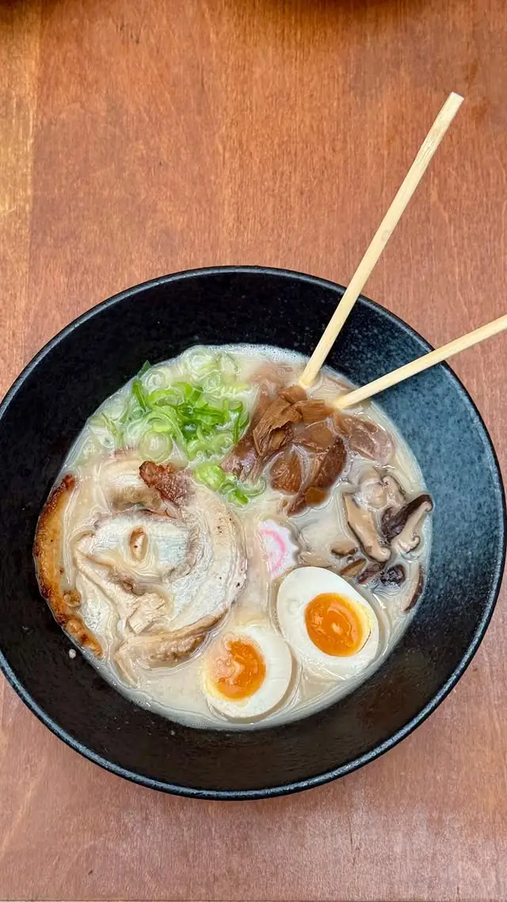
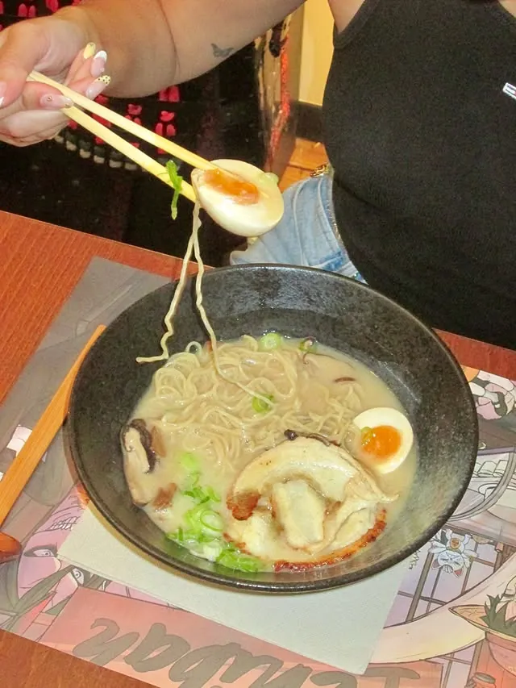
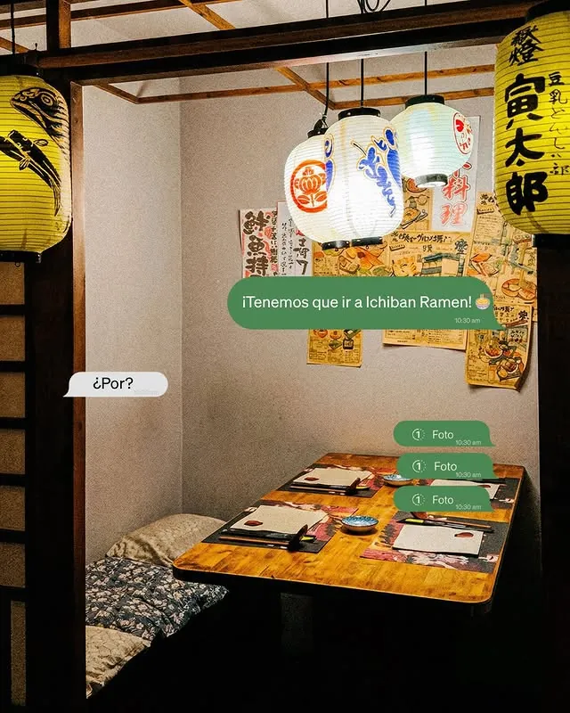

Ichiban
Ramen
Ramen japonés · Gràcia
En el corazón de Gràcia, a pocos pasos del Passeig de Gràcia. Caldo tonkotsu elaborado con paciencia, chashu que se deshace, huevo marinado, ambiente izakaya. La cocina japonesa de verdad no tiene prisa.

El mejor ramen es el que se hace
sin atajos.
Ichiban significa "el primero", "el mejor". Desde que abrimos en Gràcia, la promesa ha sido la misma: cocina japonesa honesta, producto de calidad, y el tiempo que hace falta. Sin prisas, sin trucos.
Todo empieza
por el caldo.
El ramen malo se nota en el primer sorbo. Un caldo ligero, sin profundidad, que sabe a poco. El nuestro no. Lo que hay en el cuenco lleva tiempo, técnica y ingredientes reales. Esto es lo que nos diferencia.
El hueso, el tiempo, el fuego
Un tonkotsu auténtico empieza con hueso de cerdo cocinado a fuego vivo durante horas. No hay otro camino. El colágeno se disuelve lentamente, el caldo se vuelve cremoso, blanco, denso. Es ese proceso el que le da la textura característica que lo cubre todo.
tonkotsu · caldo de hueso · cocción lentaEl chashu que se deshace
La panceta japonesa se cocina durante horas en salsa de soja, sake y azúcar. El resultado es una carne que se deshace en la boca con un punto dulce-salado inconfundible. No es un relleno. Es parte del sabor del cuenco.
panceta · soja · sake · cocción lentaEl huevo marinado, pieza a pieza
Cada huevo se cuece a 63 grados para conseguir esa yema líquida de color naranja. Después reposa en marinada de soja y mirin el tiempo necesario. Cuando lo cortas con el palillo, la yema fluye dentro del caldo. Ese detalle no se improvisa.
huevo ajitsuke · cocción exacta · marinado artesanalEl cuenco, el momento
Fideos frescos cocidos al momento, servidos en cuenco negro de cerámica con todo a temperatura. La cebolleta fresca, las setas, el naruto. Todo junto en ese cuenco que llega a tu mesa. El ramen no espera — y tampoco debería.
fideos frescos · cerámica japonesa · servicio en mesaRamen, gyozas
y más platos.
Además del ramen, nuestra carta incluye gyozas al vapor y a la plancha, dim sum, bowls teriyaki y ebi katsu. Cocina japonesa de calle para compartir o para tomar solo frente al cuenco.


"Si sueñas con Japón, este es tu lugar."
Eso es lo que ponemos en cada plato. No somos una cadena, no hay recetas en cadena, no hay prisa por rotar la mesa. Somos un ramen-ya de barrio en Gràcia con las cosas bien hechas.
Estamos en
Gràcia.
Carrer Gran de Gràcia, 44
08012 Barcelona — Gràcia
937 68 50 80
- Lunes13:00–16:00 · 19:30–23:30
- MartesCerrado
- Miércoles13:00–16:00 · 19:30–23:30
- Jueves13:00–16:00 · 19:30–23:30
- Viernes13:00–16:00 · 19:30–23:30
- Sábado13:00–16:00 · 19:30–23:30
- Domingo13:00–16:00 · 19:30–23:30
Disponible en los mismos horarios.
Llama al 937 68 50 80 para preparar tu pedido.
@ichibanramenbcn en Instagram
Todo lo que
necesitas saber.
¿Qué tipo de ramen sirven?
Nos especializamos en ramen tonkotsu, el caldo cremoso de hueso de cerdo cocinado durante horas. Cada cuenco lleva chashu (panceta japonesa cocinada lentamente), huevo marinado de yema líquida, cebolleta fresca, setas y fideos al punto. También tenemos otras opciones de ramen y platos de calle japonesa como gyozas, dim sum y bowls teriyaki.
¿Dónde estáis exactamente en Barcelona?
Estamos en el Carrer Gran de Gràcia, 44, en el barrio de Gràcia (08012 Barcelona). Es una de las calles principales de Gràcia, muy cerca del Passeig de Gràcia. Podéis llegar en metro desde Diagonal (L3/L5) o Fontana (L3). Hay varios aparcamientos en la zona y acceso en bicicleta o patinete.
¿Cuáles son vuestros horarios?
Abrimos de lunes a domingo en dos turnos: de 13:00 a 16:00 para la comida, y de 19:30 a 23:30 para la cena. El único día que cerramos es el martes. Si tenéis alguna duda sobre si estaremos abiertos un día festivo, lo mejor es llamarnos al 937 68 50 80 antes de venir.
¿Hacéis servicio de para llevar?
Sí, tenemos servicio de para llevar en los mismos horarios que el restaurante. Podéis llamarnos al 937 68 50 80 para hacer vuestro pedido con antelación y recogerlo directamente en el local. Nuestros cuencos están preparados para aguantar el trayecto sin perder temperatura ni textura.
¿Es necesario reservar?
Recomendamos reservar para viernes, sábados y domingos tanto en comida como en cena, ya que solemos llenarnos. Entre semana hay más disponibilidad, aunque reservar siempre os garantiza mesa. Para grupos de más de cuatro personas la reserva es imprescindible. Podéis reservar aquí mismo o llamarnos al 937 68 50 80.